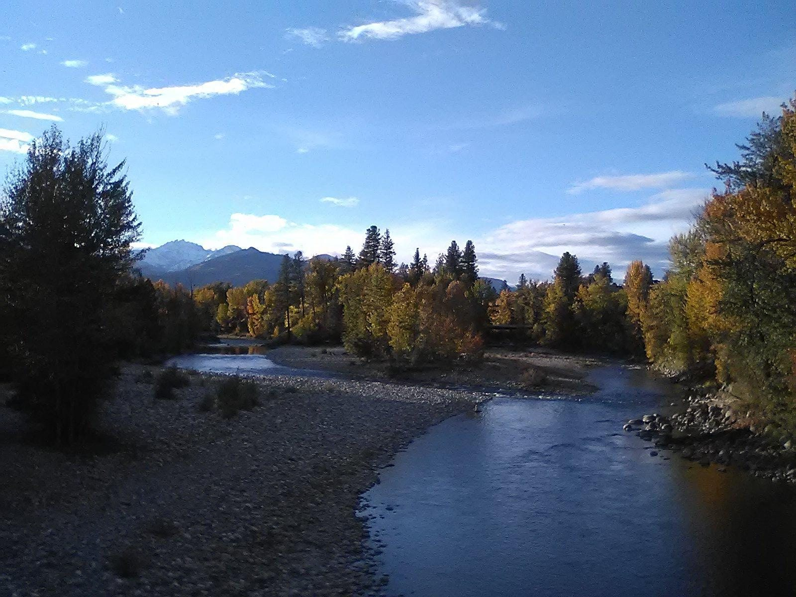
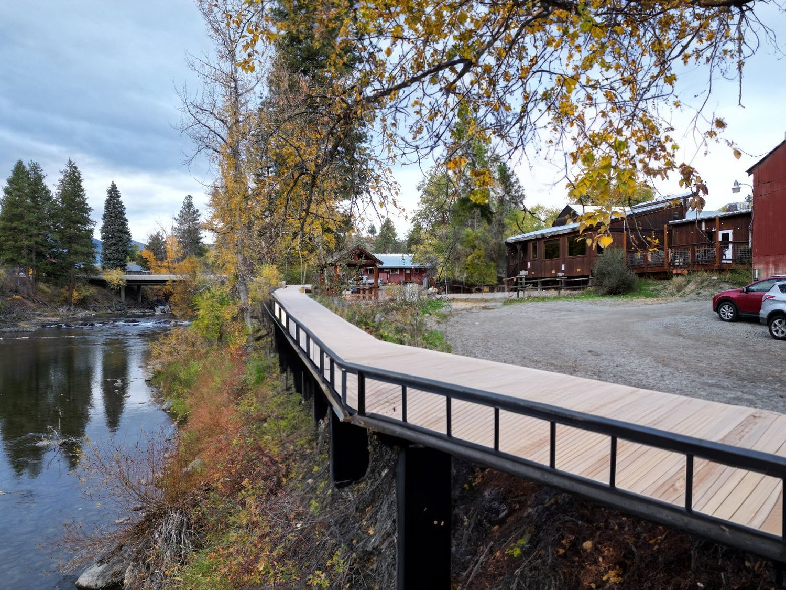
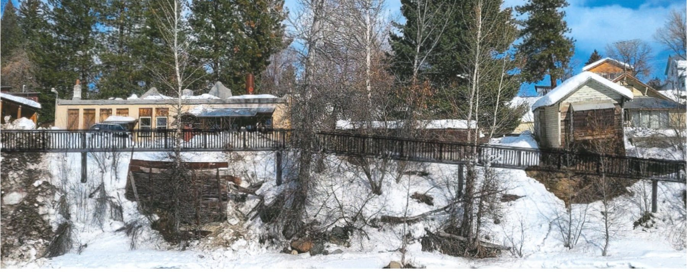

Safe passage
A dedicated path off the highway for families, elders, and kids on bikes — the way it should be.

An official project of the Town of Winthrop & the Friends of the Riverwalk
Help close the last gap on the Winthrop Riverwalk — a safe, six‑foot path along the Chewuch and Methow, in the heart of downtown.
The vision
For decades, local leaders have envisioned a public pathway opening the Chewuch River shoreline to all. Now the Town of Winthrop and the Friends of the Riverwalk are making it real — a continuous, free trail that reconnects downtown to the rivers that made it.
The problem
For about 560 feet, anyone on foot is forced onto the Highway 20 fog line — families, elders, and kids on bikes, shoulder‑to‑shoulder with semis and logging trucks. The Riverwalk closes it.

Why it matters
A dedicated path off the highway for families, elders, and kids on bikes — the way it should be.
Links the Susie Stephens Trail, the downtown boardwalk, and Confluence Park — and the shops, library, Rink, and schools between them.
Replaces failing bank stabilization at the confluence and restores riparian habitat for native fish and wildlife.
A six‑foot, all‑season path open to every age and ability, at no cost — residents and visitors alike.
The plan
The first segment carries the route safely beneath a busy crossing — funded and slated for construction this year.
A 950‑foot path on micro piles that finally lets walkers bypass the Highway 20 fog line. $2M of $3.5M secured; easements donated.
Repair failing bank stabilization where the Chewuch meets the Methow, and restore the shoreline for fish and wildlife.
Tie the segments together through Confluence Park and the boardwalk, with interpretive signs — a free path open to all.

Every town has a riverwalk,— James & Deborah Fallows, Our Towns
even if it doesn't have a river.
From the ground
Watch
Make a gift
The Town of Winthrop and the Friends of the Riverwalk are raising $1.2 million to complete the trail. Your gift is the local match that unlocks a $2.06 million Washington State grant — so every dollar you give brings state funding to the river.
A gift of $100 helps lay the hard‑surface path along the water.
100% goes to the Riverwalk. Gifts are managed by our fiscal sponsor, the Community Foundation of North Central Washington, and may be tax‑deductible.